“I was consistently impressed by Monica’s curious nature, willingness to explore different ideas, and communication ability. She’s a great designer and cross-functional collaborator who understands the importance of doing her own customer research. Monica also helped lead the way as our team explored new AI tools. Any team would be lucky to have her, and I hope our paths cross again.”
Hello! I’m Monica.
I’m a Vancouver-based product designer with 9 years of experience. I'm most motivated by solving complex problems that have a positive impact on users. I have a strong bias for action and thrive in a fast-paced, high-growth environment, where I can help ship great products!
Loopio
RFP response software that helps teams answer questionnaires from a central Library of approved content.
Orum
AI-powered sales dialer for outbound teams.
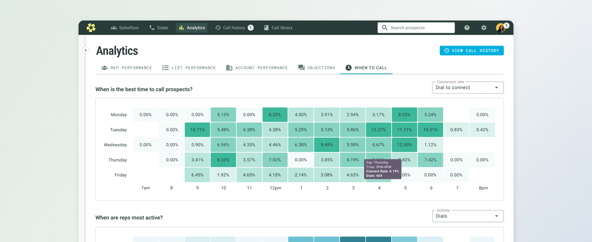
Analytics
Redesigning a churn-driving analytics experience so sales teams could understand performance and improve their dialing strategy.
+18% daily analytics usage among reps
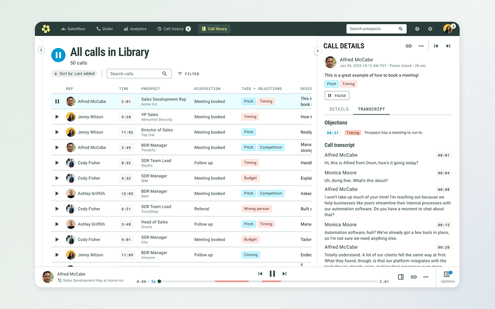
Call Library + Call History
Giving managers and reps a better way to save, review, and learn from calls for coaching and training.
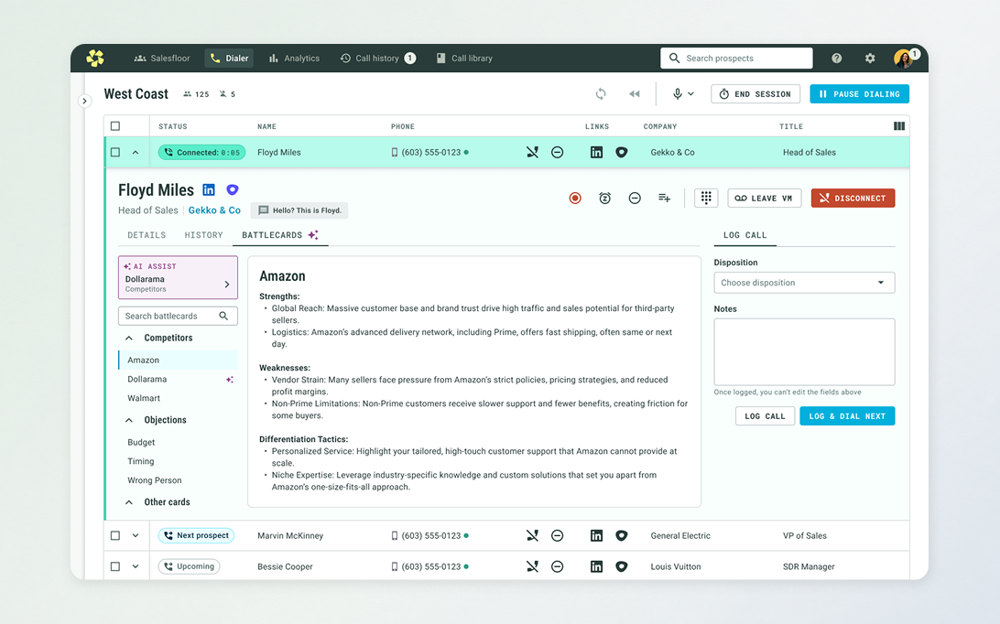
Battlecards + AI Assist
Bringing enablement content into the workflow, helping managers author it with AI, and surfacing it when reps need it.
Abnormal Security
AI-powered email security platform for enterprise teams.
Top Hat
Higher-ed teaching and learning platform for instructors and students.
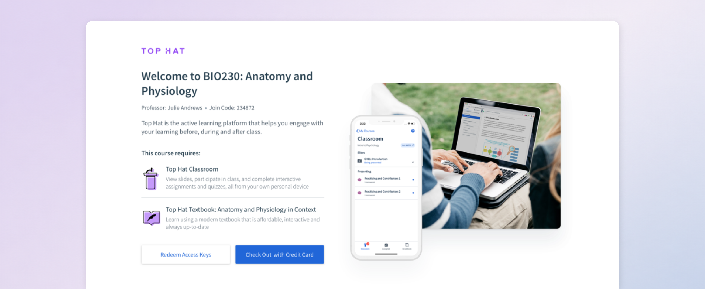
Student Checkout
Rebuilding an outdated, confusing purchase flow for students buying their course materials.
3,054 → 820 checkout-related support tickets
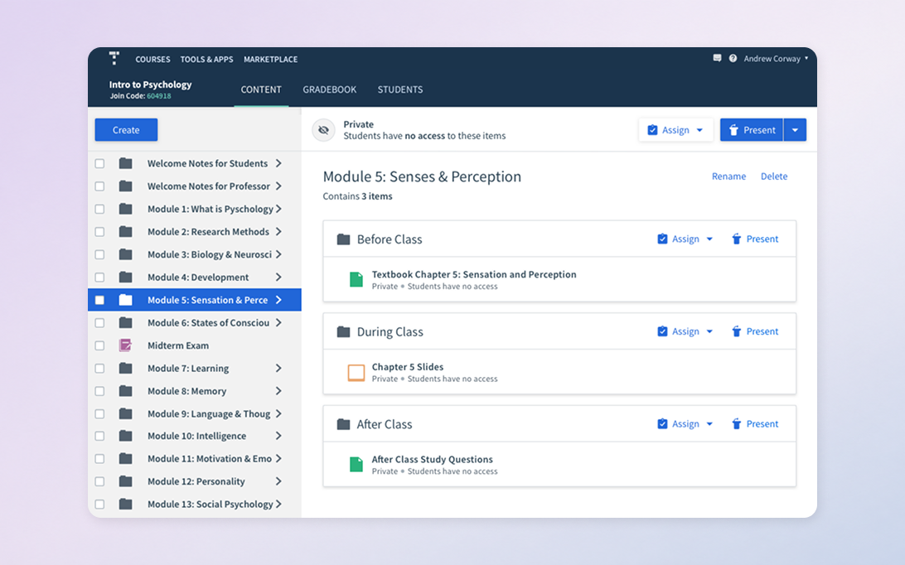
Intro Courses
Transforming textbooks into full course solutions and redesigning navigation around a new teaching model.
10% → 20% sales win rate for the textbook offering
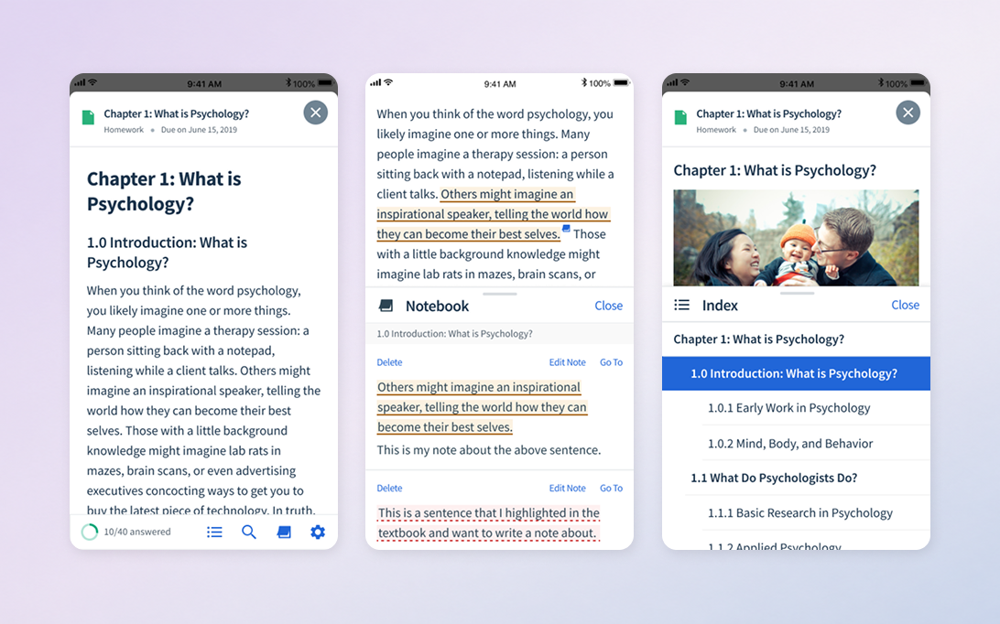
Mobile Pages
Designing a better mobile reading and assignment experience for interactive textbook content.
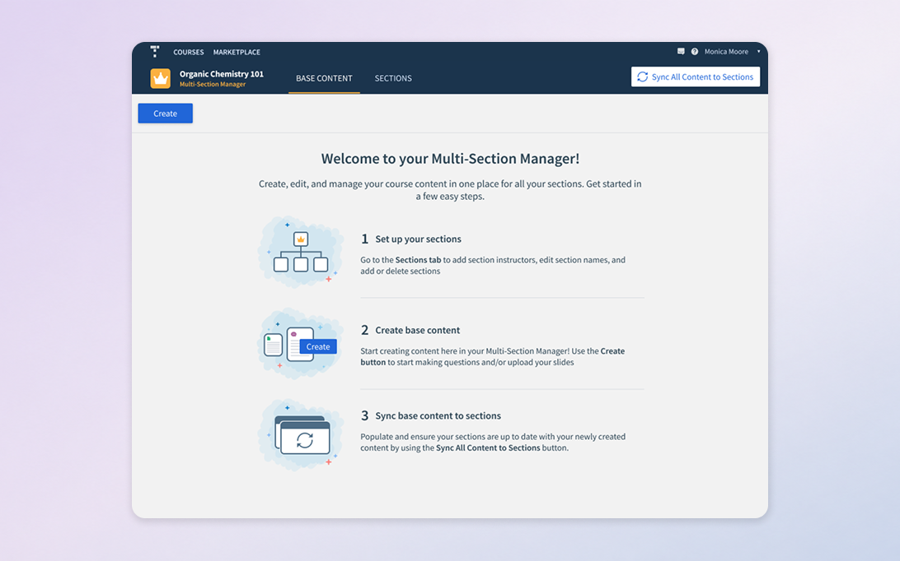
Multi-Section Management
Helping professors manage large, complex courses with many sections and instructors.
$3m revenue opportunity enabled by the project
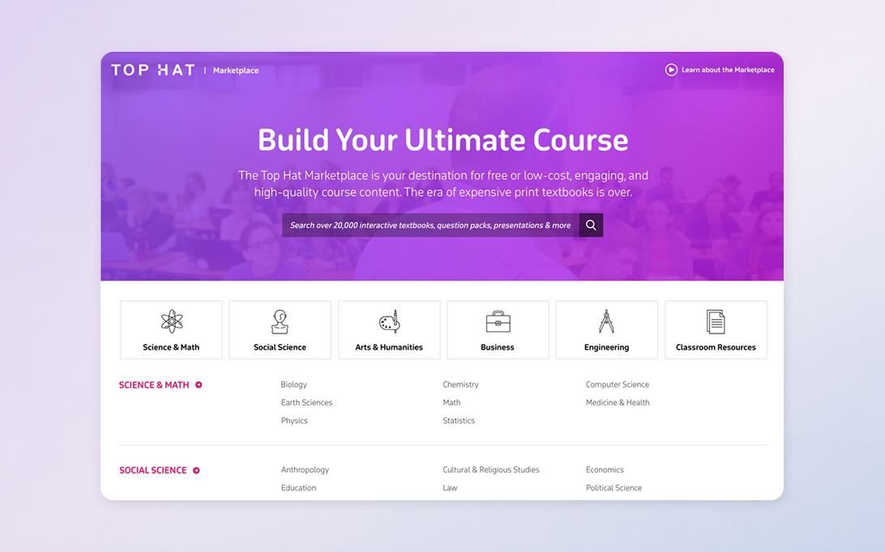
Marketplace
Creating one marketplace for prospective and existing customers to discover and adopt course content.
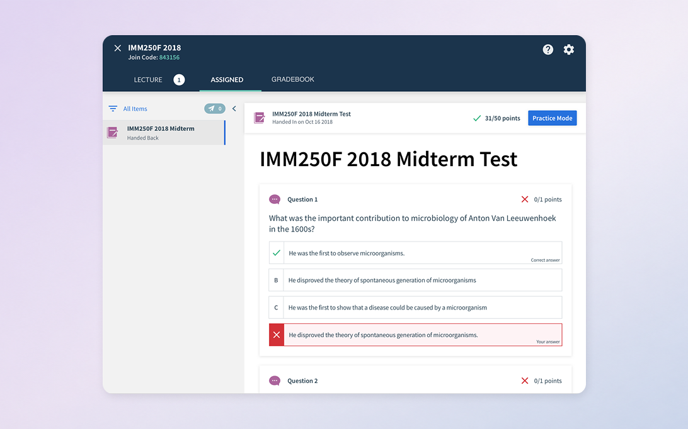
Test Handback
Enabling professors to hand tests back digitally while supporting review and practice workflows.
Plenty of Fish
Consumer dating platform focused on helping people meet and connect.
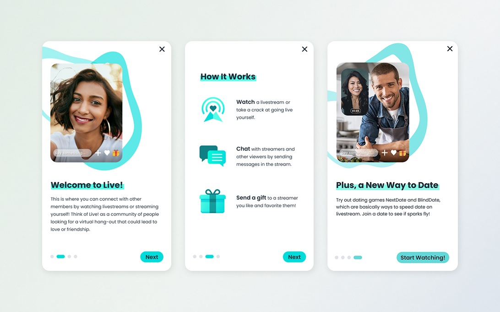
Live Onboarding
Redesigning onboarding to improve clarity and activation for a live-streaming experience.
+5% activation in A/B testing
Clio
Legal practice management software for law firms.
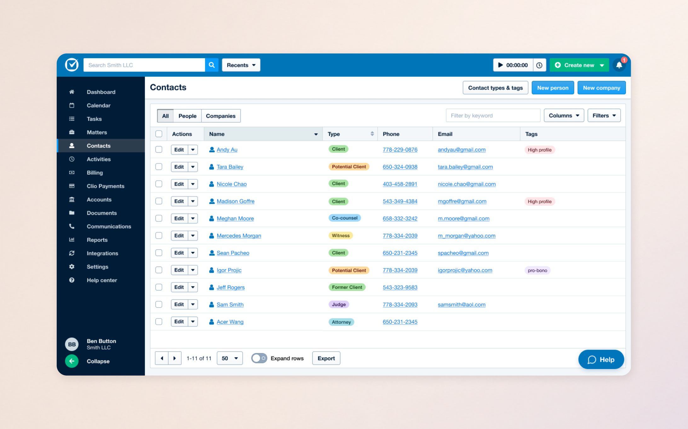
Contact Unification
Unifying contact management across Clio Grow and Clio Manage.
Clio Grow’s top requested feature
From people I’ve worked with
Recommendations from managers and cross-functional teammates across recent roles.
“Monica demonstrated incredible design leadership and contributed to the rapid growth of our products. She was highly thorough and intentional, with strong product intuition, and I could always trust her to guide the team toward high-quality solutions. She also provided important input into product strategy, and her research helped us prioritize the roadmap effectively. I recommend Monica most highly.”
“Monica was efficient and customer-focused. She led the design of several complex surfaces with diverse scope, brought rigor to our user research processes, and elevated our products. She built strong design intuition through research, shared valuable insights in our design critiques, and was always open to feedback. I hope our paths cross again.”
“Monica is able to create excellent interface designs without delay which, combined with her ability to communicate clearly with developers and product managers, allowed us to quickly iterate toward an excellent user experience. She was always a pleasure to work with, a beacon of positivity in team meetings, and never afraid to be the first to voice an opinion. I’m jealous of her current and future teammates!”
“I was consistently impressed by Monica’s ability to conduct thorough and insightful user research. Her feedback was always honest, constructive, and focused on improving the design and user experience of our products. Monica is also a strong communicator who can articulate her ideas and feedback in a way that is clear, concise, and actionable.”
“Monica is an exceptional user-focused product designer who articulates her opinions thoughtfully, asks insightful questions, and iterates quickly. We worked together on an exceptionally challenging project, and I was so grateful to have such a skilled designer and problem solver on the team. I would jump at the opportunity to work with her again.”